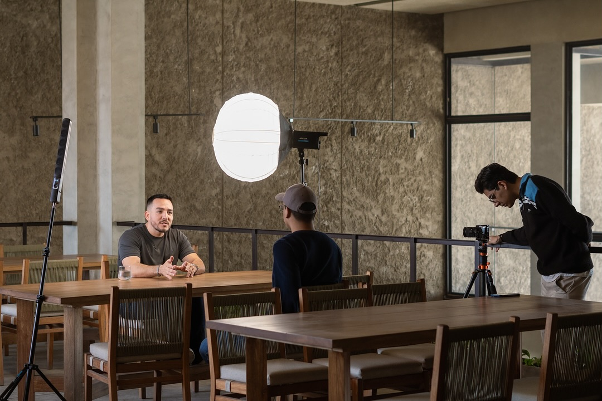
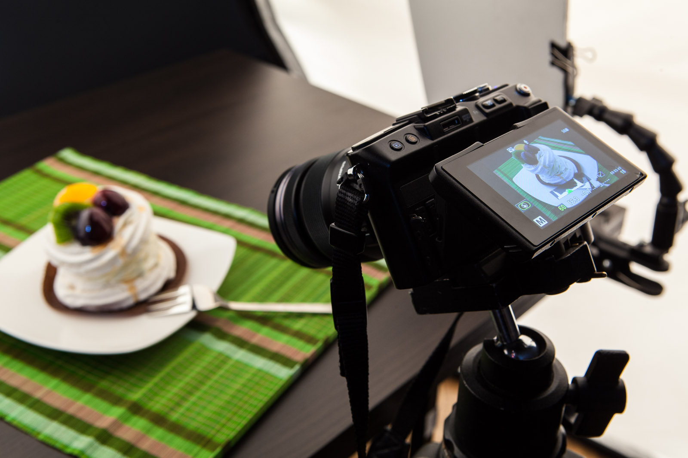

Nuestros Servicios
Cada una de nuestros servicios esta pensado para que tu
marca deje huella, desde la planificación hasta la ejecución. Nos enfocamos en lo que realmente importa:
¡Reflejar valores y mejorar tu presencia en redes!

Producción audiovisual
Crea contenido visual que inspire y conecte
En Identity Social Media, sabemos que el contenido audiovisual es una de las formas más efectivas para comunicar el
mensaje de tu marca de manera emocional y memorable. Ya sea que necesites un video promocional, una publicidad
para redes sociales o fotos impactantes, nuestro equipo de expertos en producción audiovisual se encargará de crear
contenido visual que deje una huella profunda en tu audiencia.

Fotografía profesional
Captura momentos que cuentan la historia de tu marca
La fotografía es una herramienta poderosa para transmitir la esencia de tu marca de manera visual. Nos
especializamos en crear imágenes que no solo capturan momentos, sino que también transmiten emociones y reflejan los valores
que hacen única a tu empresa. Ya sea que necesites fotos de productos, retratos de equipo o fotografía para campañas publicitarias,
nos aseguramos de que cada imagen resalte la autenticidad de tu marca y deje una huella memorable en tus clientes.

Diseño digital
Diseña una identidad que cuente tu historia
Tu marca es mucho más que un logo, es la percepción que tu audiencia tiene de ti. En Identity Social Media, nos especializamos en crear diseños
digitales que no solo son visualmente atractivos, sino que también transmiten los valores que hacen única a tu empresa. Desde un logotipo
impactante hasta una estrategia visual integral, trabajamos contigo para asegurar que tu marca deje una huella memorable en todos los puntos
de contacto.
Gestión de redes sociales
Haz que tu marca se escuche en el lugar correcto
En Identity Social Media, entendemos que cada marca tiene una historia única que merece ser escuchada. Nuestro servicio de gestión de redes sociales
está diseñado para amplificar tu voz en plataformas clave como Instagram, Facebook, LinkedIn y TikTok. Nos enfocamos en crear una comunicación
auténtica que refleje los valores de tu empresa y se conecte de manera real con tu audiencia. Desde la creación de contenido atractivo hasta
la interacción diaria, nos aseguramos de que tu marca no solo sea visible, sino que deje una huella.